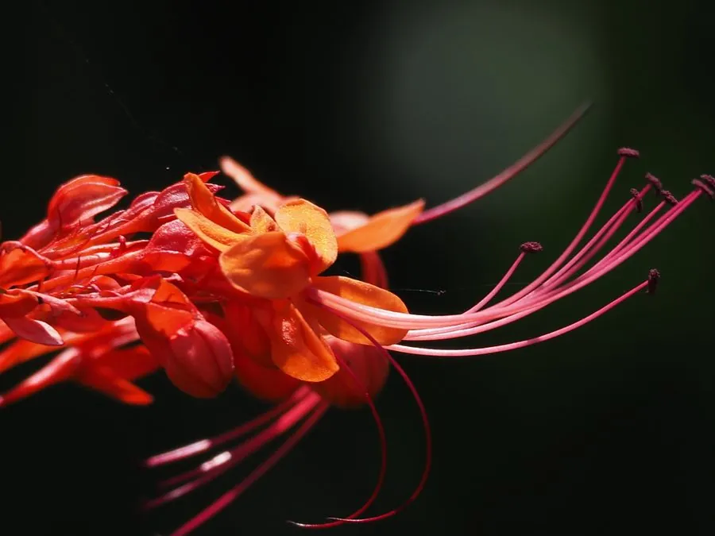

灌木与花木 · 植物界
赪桐 Clerodendrum japonicum

唇形科大青属落叶灌木，花序顶生、花冠鲜红如火焰，是南方庭园与寺庙常见的吉祥花木，根叶可入药。
- 分类
- 门被子植物门纲木兰纲目唇形目科唇形科属大青属
- 栖息环境
- 海拔 1000 米以下的山谷、溪边与林缘，喜温暖湿润、阳光充足
- 地理分布
- 中国南方、日本、印度、东南亚等地
- 保护级别
- IUCN 暂无评估；分布较广，野生种群稳定
物种志
赪桐为落叶灌木，高 1–3 米，茎四棱形，幼枝被毛。叶片大，圆心形至阔卵形，长 15–35 厘米，边缘具疏齿，叶背密生腺点。大型聚伞花序顶生，花冠鲜红色，花萼亦为红色，花丝细长伸出，整个花序像一团燃烧的火焰；核果球形，成熟时蓝黑色，宿存花萼红色。
本种分布于中国南方、日本、印度与东南亚，生于海拔 1000 米以下的山谷、溪边与林缘，喜温暖湿润、阳光充足的环境。它花序硕大、色彩热烈，在华南常被种于庭院、寺庙与公园，寓意吉祥；根、叶入药，有清热利湿、散瘀消肿之效。赪桐耐热、耐湿，但不耐寒，北方需盆栽。其花蜜丰富，能吸引蝴蝶与太阳鸟。
形态与习性
- 株高1–3 米，茎四棱形
- 花期6–10 月，花序鲜红色
- 果期9–11 月，核果蓝黑色
- 光照喜光，也耐半阴
- 水分喜湿润，耐短期水湿
- 土壤疏松肥沃的微酸性壤土
- 主要用途庭院观赏、寺庙供花与根叶入药
趣味知识
- 赪桐的“赪”就是浅红色的意思，形容它火红的花序。
- 它的花丝远远伸出花冠，像火焰中迸出的火星，十分醒目。
- 在华南寺庙中，赪桐常被当作吉祥花木种植，花期正值盛夏。
- 赪桐的根和叶在民间入药，用于清热利湿、散瘀消肿。